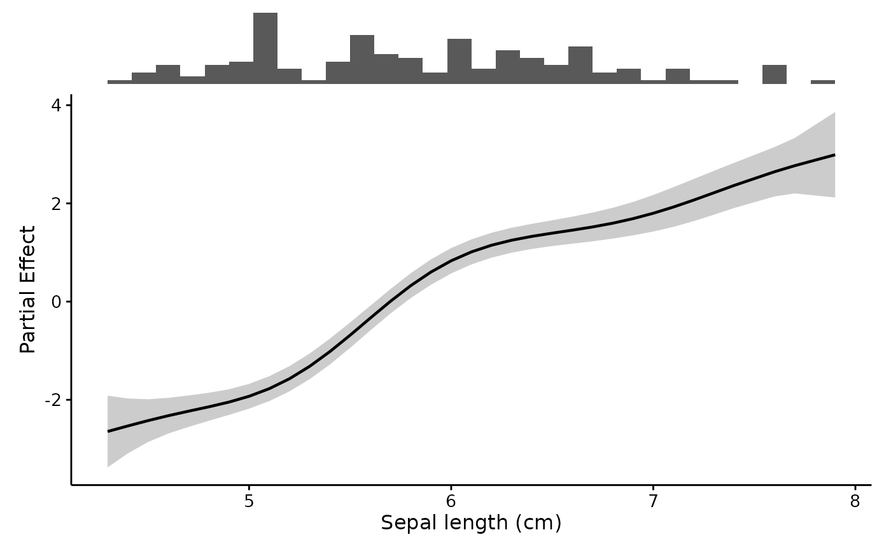
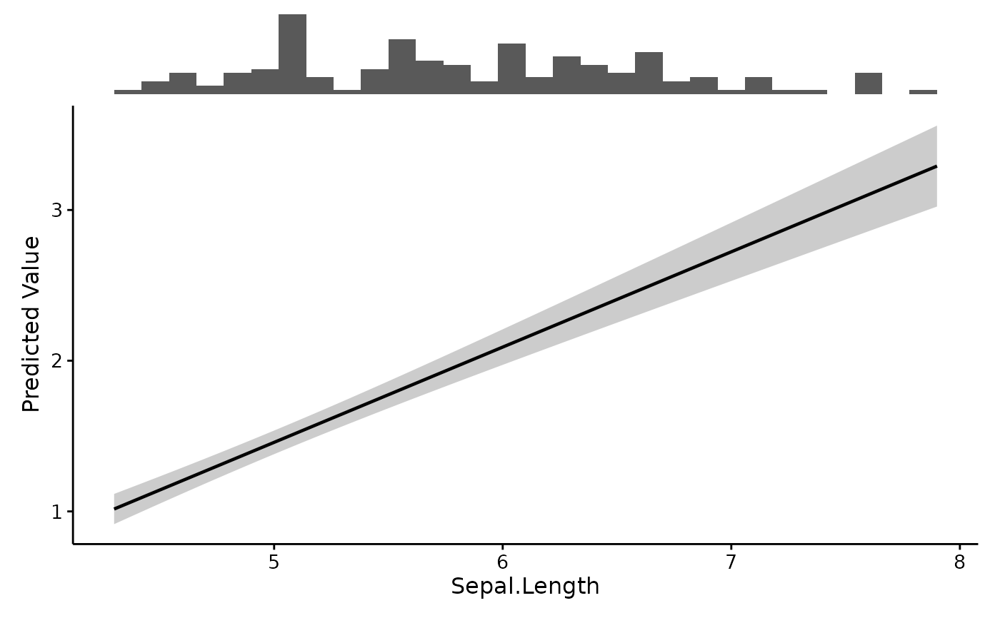
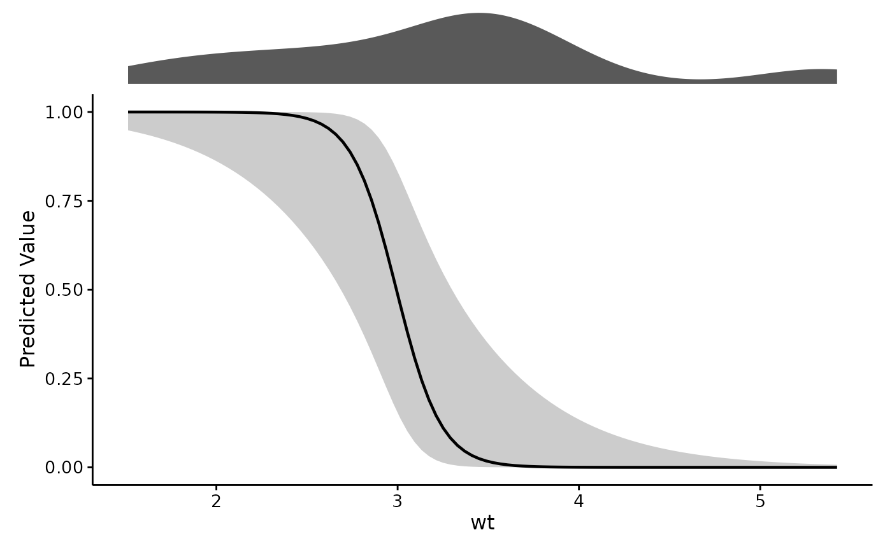

Plot a predictor's effect with a rug of the raw data above it
Source:R/plotEffects.R
plotEffects.RdDraws the effect of var as a line with an uncertainty ribbon, and stacks a
rug of the raw data directly above it on a shared x axis. The rug is the
point: it shows where the data actually is, so a bend in the curve can be
read against how much evidence sits under it.
Usage
plotEffects(
model,
dat,
var,
xlab = var,
ylab = NULL,
title = "",
scale = c("auto", "link", "response"),
interval = c("auto", "se", "ci", "cri"),
level = 0.95,
n = 100,
transform = c("none", "log", "log10", "sqrt"),
rug.type = c("histogram", "density"),
bins = 30,
group.lab = NULL,
theme = theme_fancyfx(),
palette = fancyfx_palette(),
linewidth = 0.8,
...
)Arguments
- model
A fitted model. GAMs from mgcv are shown as partial effects; other model classes are shown as predictions. See Details.
- dat
Raw data used to fit the model, for the accompanying rug plot. It must be the data the model was fitted on: effects are reported in the model's own units, so a rug drawn from differently scaled data would sit on a different x axis than the curve above it.
- var
Name of the predictor to plot, as a string.
- xlab
Label for the x-axis, describing
varwith units where applicable. Defaults to the variable's own name.- ylab
Label for the y-axis. Defaults to naming whichever quantity was actually computed –
"Partial Effect"or"Predicted Value".- title
Plot title, optional. Set on the effect panel rather than the stacked figure, so it sits with the curve it describes rather than above the rug.
- scale
"auto"(the default),"link", or"response"."auto"gives a GAM its partial effect on the link scale and every other model its predictions on the response scale. For a GAM this argument chooses between two different quantities, not just two axis scales; see Details.- interval
"auto"(the default),"se"for a+/- 1standard error ribbon,"ci"for a pointwise interval atlevel, or"simultaneous"for a band covering the whole curve atlevel– GAM partial effects only."auto"gives a pointwise interval atlevel, which is 95% by default."cri"is accepted as a name for the same thing as"ci".- level
Interval level used when
interval = "ci". Ignored otherwise.- n
Number of points at which to evaluate the effect. Ignored for the GAM partial-effect path, where gratia chooses the grid.
- transform
Optional parameter indicating how to transform the variable, if applicable. Applied to both the curve and the rug, so they stay aligned.
- rug.type
Type of rug plot to draw above the effect.
- bins
Number of bins for a histogram rug.
- group.lab
Legend title used when the effect splits into several curves, as for a factor-smooth interaction. Defaults to the name of the factor doing the splitting.
- theme
A ggplot2 theme for the effect panel. Defaults to
theme_fancyfx(), a publication-ready theme built onggpubr::theme_pubr(). Any other theme can be passed instead.- palette
Colours used when the effect splits into several curves. Defaults to
fancyfx_palette(), which is colour-vision-deficiency safe.- linewidth
Width of the effect line.
- ...
Passed through to the backend,
gratia::smooth_estimates()ormarginaleffects::predictions(). For a mixed model this is wherere.formgoes: it defaults toNA, meaning the effect is drawn at the population level rather than for one arbitrary group. See Details.
Details
What gets plotted depends on the model, because the natural quantity differs:
A GAM is shown as the partial effect of the smooth – the term's own contribution, centered to average zero. This is the quantity this package drew before it handled anything but GAMs, and it remains the default so existing code is unaffected.
Any other model, and a GAM asked for
scale = "response", is shown as predicted values: the model's fitted output asvarvaries, with the other predictors held at representative values.
The y-axis label reports which one you got. Do not compare a partial effect against a prediction as though they were on the same footing – one is centered on zero and excludes the rest of the model, the other is not and does not.
The default ribbon is a 95% pointwise interval, matching
mgcv::plot.gam(), which draws +/- 2 SE, and gratia::draw(), which draws
95%. Earlier versions of this package drew +/- 1 SE – roughly 68%, half
the width of both – which a reader seeing a ribbon on a smooth would very
likely misread as 95%. Pass interval = "se" for that narrower band, now
that asking for it is explicit.
For a GAM smooth, interval = "simultaneous" draws a band covering the
whole curve rather than each point separately. A pointwise interval covers
the true value at each x with the stated probability at that x; across a
curve evaluated at a hundred points, the true function strays outside it far
more often than the stated rate. Any claim about the shape of a smooth –
which is usually why one is drawn – is a claim about the whole curve, and
the simultaneous band is the one that supports it. It is noticeably wider,
which is the point.
A Bayesian fit (brms, rstanarm) is summarised from posterior
draws, which yield an interval but no standard error, so the ribbon is the
credible interval at level – there is no SE ribbon to be had. Write
interval = "cri" if you would rather say so explicitly; it computes the
same thing. brms takes re_formula rather than re.form, and that
translation is handled for you.
A factor-smooth interaction, s(x, by = f), is one smooth per level of
f. Those are drawn as separate coloured curves with a legend, rather than
joined end to end into a single zigzagging line.
For a mixed model, re.form defaults to NA, so the effect is drawn at
the population level. This matters: left to the backend's own default, the
grouping factor is held at its modal level and the plot silently shows the
effect for one arbitrary group rather than the average one. Pass
re.form = NULL to include the random effects. Note that the ribbon
reflects uncertainty in the fixed effects only – it does not widen to
account for variation between groups.
On the response scale, interval = "ci" is built on the link scale and
back-transformed, so it stays within the range the response admits – a
probability band will not run past 0 or 1. interval = "se" cannot use that
construction, since an asymmetric interval has no single standard error
behind it. Prefer "ci" when plotting probabilities.
References
Wood, S. N. (2017). Generalized Additive Models: An Introduction with R (2nd ed.). Chapman and Hall/CRC. doi:10.1201/9781315370279
Arel-Bundock, V., Greifer, N., & Heiss, A. (2024). How to interpret statistical models using marginaleffects for R and Python. Journal of Statistical Software, 111(9), 1-32. doi:10.18637/jss.v111.i09
See also
combinePlots() to show several predictors at once, plotRugs()
for the rug on its own, and mgcv::gam() or
marginaleffects::predictions() for the machinery underneath.
Other effect plots:
combinePlots(),
comparePlots(),
plotRugs(),
plotSmooths()
Examples
# A GAM: partial effect of the smooth, with the data rug above it
gam.fit <- mgcv::gam(Petal.Length ~ s(Sepal.Length), data = iris)
plotEffects(gam.fit, iris, "Sepal.Length", xlab = "Sepal length (cm)")

# A linear model: predicted values, via marginaleffects
lm.fit <- lm(Petal.Length ~ Sepal.Length + Species, data = iris)
plotEffects(lm.fit, iris, "Sepal.Length")

# A logistic regression on the response scale, with a 95% interval
glm.fit <- glm(am ~ wt + hp, data = mtcars, family = binomial)
plotEffects(glm.fit, mtcars, "wt", scale = "response",
interval = "ci", rug.type = "density")
